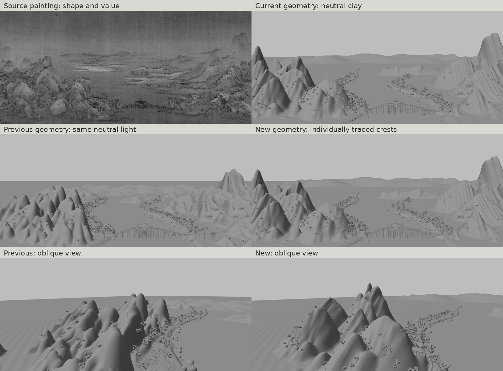
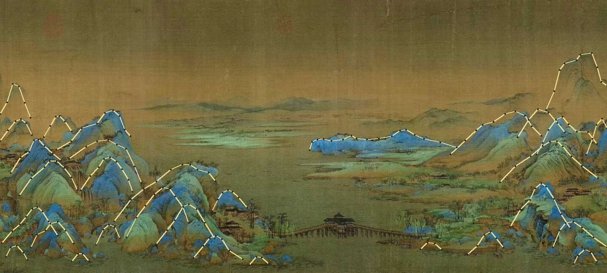
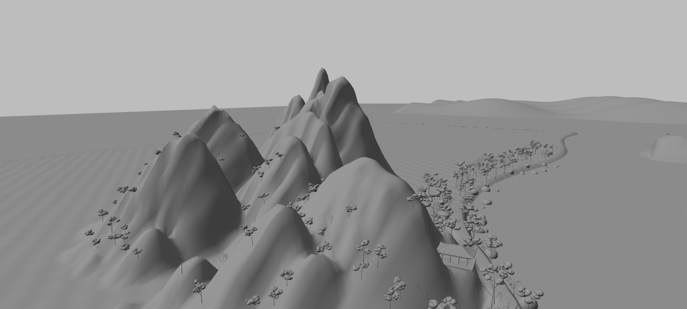
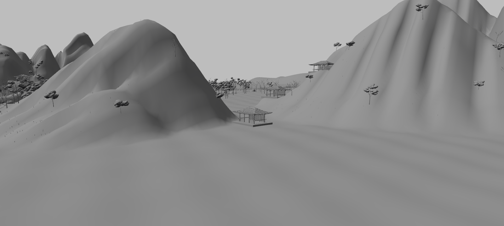
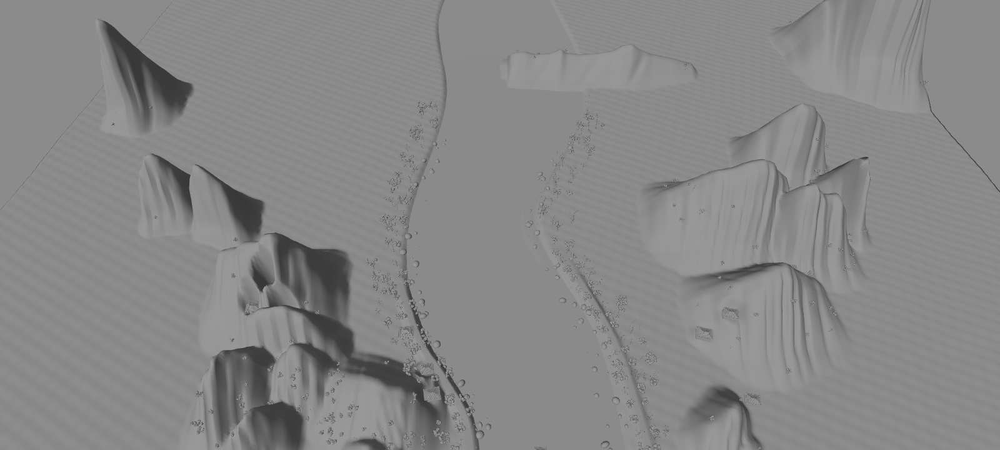

Explore the geometry in clay · View with the existing ink colorsMountain shape first
This revision replaces the repeated generic mountain heads with 31 individually specified ridge forms. Their crest landmarks come from close inspection of the supplied painting. The painting’s palette and ink settings are held at revision 5 while the geometry is refined.

The previous and new meshes share the same camera and neutral studio lighting. The source is grayscale for comparison; its painted shadows are not a geometry mask.
Follow the particular ridges
The left range has long sloping shoulders, an uneven broad upper crest, and distinct small hills in front. The right range uses separate leaning ridges and a lower foreground crag. The middle island is a long low spine. Each form has front and back slopes, a depth sweep, carved folds and a flared foot; these remain real volumes when the camera moves.

Editable crest guides read from the source. Hidden slopes and depth are inferred. No source-image texture is projected on the geometry.
Inspect the depth

Oblique view of sloping shoulders and overlapping front hills.
Right range, its lower shoulders and the bank settlement.
An elevated view exposes the complete ridge geometry and the open lake.
The old inland road grading cut into the main left ridge. The path now stays near the bank, the adjacent buildings sit farther from the crest, and their flattened ground patches are smaller. The bridge and pavilion retain their existing crown alignment.
This is a closer, editable shape study, with remaining interpretation in the hidden slopes, fine rock contours and distance. The registration report checks actual mesh triangles against the hand-read guides; it is not an independent painting-similarity score. The crest and depth records are saved with the scene. The earlier ink rendering research remains available for the later color pass.